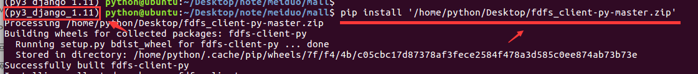
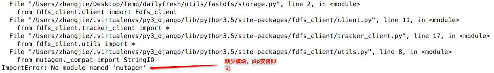
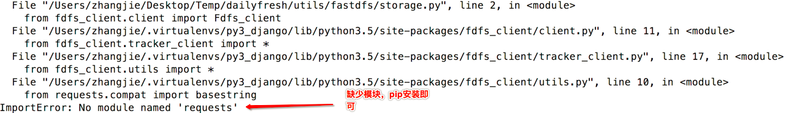
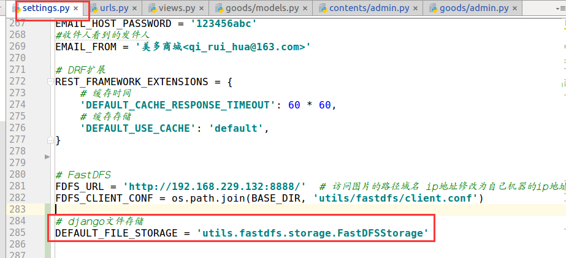

FastDFS客户端与自定义文件存储系统
1. FastDFS的Python客户端
python版本的FastDFS客户端使用说明参考https://github.com/jefforeilly/fdfs_client-py
安装
安装提供给大家的fdfs_client-py-master.zip到虚拟环境中
pip install fdfs_client-py-master.zip
pip install mutagen
pip isntall requests
没有mutagen和requests模块的错误

使用
使用FastDFS客户端，需要有配置文件。我们在mall/utils目录下新建fastdfs目录，将提供给大家的client.conf配置文件放到这个目录中。
需要修改一下client.conf配置文件
base_path=FastDFS客户端存放日志文件的目录
tracker_server=运行tracker服务的机器ip:22122
上传文件需要先创建fdfs_client.client.Fdfs_client的对象，并指明配置文件，如
from fdfs_client.client import Fdfs_client
client = Fdfs_client('mall/utils/fastdfs/client.conf')
通过创建的客户端对象执行上传文件的方法
client.upload_by_filename(文件名)
或
client.upload_by_buffer(文件bytes数据)
如：
>>> from fdfs_client.client import Fdfs_client
>>> client=Fdfs_client('utils/fastdfs/client.conf')
>>> client.upload_by_filename('/home/python/Desktop/images/0.jpg')
getting connection
<fdfs_client.connection.Connection object at 0x7f25174eb940>
<fdfs_client.fdfs_protol.Tracker_header object at 0x7f25174eb908>
{'Remote file_id': 'group1/M00/00/00/wKjlhFsTgJ2AJvG_AAAyZgOTZN0850.jpg', 'Uploaded size': '12.00KB',
'Local file name': '/home/python/Desktop/images/0.jpg', 'Storage IP': '192.168.229.132',
'Group name': 'group1', 'Status': 'Upload successed.'}
- Remote file_id 即为FastDFS保存的文件的路径
2. 自定义Django文件存储系统
在学习Django框架的时候，我们已经讲过，Django自带文件存储系统，但是默认文件存储在本地，在本项目中，我们需要将文件保存到FastDFS服务器上，所以需要自定义文件存储系统。
自定义文件存储系统的方法如下：
1）需要继承自django.core.files.storage.Storage，如
from django.core.files.storage import Storage
class FastDFSStorage(Storage):
"""
自定义文件上传类
"""
pass
2）存储类中必须实现_open()和_save()方法，以及任何后续使用中可能用到的其他方法。
_open(name, mode='rb')被Storage.open()调用，在打开文件时被使用。
_save(name, content)被Storage.save()调用，name是传入的文件名，content是Django接收到的文件内容，该方法需要将content文件内容保存。
Django会将该方法的返回值保存到数据库中对应的文件字段，也就是说该方法应该返回要保存在数据库中的文件名称信息。
exists(name)如果名为name的文件在文件系统中存在，则返回True，否则返回False。
url(name)返回文件的完整访问URL
delete(name)删除name的文件
listdir(path)列出指定路径的内容
size(name)返回name文件的总大小
注意，并不是这些方法全部都要实现，可以省略用不到的方法。
from django.core.files.storage import Storage
from fdfs_client.client import Fdfs_client
class FastDFSStorage(Storage):
"""
自定义文件上传类
"""
def _open(self, name, mode='rb'):
pass
def _save(self, name, content, max_length=None):
#创建client对象
client = Fdfs_client('client.conf')
#获取文件
file_data = content.read()
#上传
result = client.upload_by_buffer(file_data)
#判断上传结果
if result.get('Status') == 'Upload successed.':
#返回上传的字符串
return result.get('Remote file_id')
else:
raise Exception('上传失败')
def exists(self, name):
# 判断文件是否存在，FastDFS可以自行解决文件的重名问题
# 所以此处返回False，告诉Django上传的都是新文件
return False
def url(self, name):
#返回文件的完整URL路径
return "http://192.168.229.133:8888/" + name
3）Django必须可以在无任何参数的情况下实例化，也就是说任何设置都应该从django.conf.settings中获取
from django.core.files.storage import Storage
from fdfs_client.client import Fdfs_client
from mall import settings
class FastDFSStorage(Storage):
"""
自定义文件上传类
"""
def __init__(self,conf_path=None,ip=None):
if conf_path is None:
conf_path = settings.FDFS_CLIENT_CONF
self.conf_path = conf_path
if ip is None:
ip = settings.FDFS_URL
self.ip = ip
def _open(self, name, mode='rb'):
pass
def _save(self, name, content, max_length=None):
#创建client对象
client = Fdfs_client(self.conf_path)
#获取文件
file_data = content.read()
#上传
result = client.upload_by_buffer(file_data)
#判断上传结果
if result.get('Status') == 'Upload successed.':
#返回上传的字符串
return result.get('Remote file_id')
else:
raise Exception('上传失败')
def exists(self, name):
# 判断文件是否存在，FastDFS可以自行解决文件的重名问题
# 所以此处返回False，告诉Django上传的都是新文件
return False
def url(self, name):
#返回文件的完整URL路径
return self.ip + name
settings代码为:
# FastDFS
FDFS_URL = 'http://192.168.229.133:8888/' # 访问图片的路径域名 ip地址修改为自己机器的ip地址
FDFS_CLIENT_CONF = os.path.join(BASE_DIR, 'utils/fastdfs/client.conf')
4）需要为存储类添加django.utils.deconstruct.deconstructible装饰器
from django.utils.deconstruct import deconstructible
@deconstructible
class FastDFSStorage(Storage):
"""
自定义文件上传类
"""
...
3. 在Django配置中设置自定义文件存储类
在settings文件中添加设置
# django文件存储
DEFAULT_FILE_STORAGE = 'utils.fastdfs.storage.FastDFSStorage'
